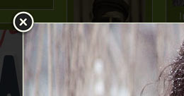
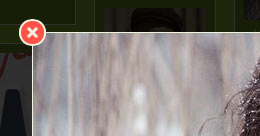

How to design a close-button with CSS
5 March, 2017 – Art. 15 – First published on Ka of Isis 141026
I had this desire to replace the close-button in the light box script fancyBox with a resolution-independent alternative. No more need for separate image sprites for “regular” screens and “retina” screens. A secondary excuse was for me to finally get to grips with more of the drawing possibilities latent in CSS. A less important urge still, was to create a button with a colour matching the red “stoplight” in the upper left corner of every app window in Mac OS X and iOS – for something closer to consistency with my preferred computer platform.
Fig. Childish buttons used in a well kown operating system.
Fig. Close-this-window-button as used by fancyBox. Screendump from a non-retina monitor.
Yes, I am aware that it is possible to use an upper or lower case x, the multiplication sign (Unicode decimal entity ×), or the cross mark (Unicode decimal entity ❌) to simulate a closing-symbol. Those solutions require a font, however, and fonts render different in different browsers, both in size and in relation to baseline, and with differing antialiasing. It may also be argued that this adds non-sematic clutter to HTML. CSS, on the other hand, silently grinds away in the background – amazingly versatile.
Do not expect a lengthy tutorial here. If you are even remotely interested in esoteric acrobatics in CSS, you will already know enough to put the code below to good use. I leave it to you to scale the button up or down, depending on your needs.
The CSS
.x {
position: relative;
width: 23px;
height: 23px;
border: 2px solid #eef5df;
background-color: #ff5248;
border-radius: 50%;
}
.x::before, .x::after {
position: absolute;
top: 10px;
left: 5px;
width: 13px;
height: 3px;
content: "";
background-color: #eef5df;
display: none;
}
.x::before {
-ms-transform: rotate(-45deg);
-webkit-transform: rotate(-45deg);
transform: rotate(-45deg);
}
.x::after {
-ms-transform: rotate(45deg);
-webkit-transform: rotate(45deg);
transform: rotate(45deg);
}
.x:hover { cursor: pointer; }
.x:hover::before, .x:hover::after { display: block; }As the default origin of rotation is at the centre of the element, it is good practice to define elements with odd number of pixels for both width and height. In this case the pseudo-element is on the small side and a height of 1 pixel, even though it is close to the visual representation in Mac OSX/iOS, is rather anemic. I like the original thickness of the x in fancyBox, so I go for 3 pixels. I even prefer the whitish colour. Vanity gains the upper hand. In fact, I even forgo principles of touchscreen target size. The latter does not matter much if fancyBox is set up to close even when the user clicks on, or touches, the area outside of the window. But you may delve deeper into the subject in the Smashing Magazine article Finger-Friendly Design: Ideal Mobile Touchscreen Target Sizes.
For a detailed list of browser support (and hence the need for vendor specific prefixes), see the Can I use website.
The close-button
Fig. Mouse over to see the hover-effect.
This way of using the button is on a par with the functionality in Mac OS X with a traditional mouse. Some users may fail to recognize the red circle as a closing-button, and the hovering effect showing the x will go missing on touchscreens. The worst that can happen, however, is that the button is activated. This will never cause a social crisis.
Hmm… The red colour has the potential to distract from the main content of the window. The jury is still out on that one.
A fancy box?
Fig. The CSS-button when hovered over in fancyBox. Screendump from a non-retina monitor.
Note: I ran into an unforeseen problem when I tried to include the border in the fancyBox CSS:
border: 2px solid #eef5df;The lower part of the border sort of diappeared, and the button looked squeezed. The following has not been thoroughly tested, but I circumvented the problem using a box shadow instead. Thus:
box-shadow: 0 0 0 2px #eef5df;Notes on pseudo-elements
Pseudo-elements like ::before and ::after should not be confused with pseudo-classes like :link. The latter are similar to classes in HTML, but they are not specified explicitly in the markup. Pseudo-elements match virtual elements that do not exist explicitly in the document tree. ::before – or ::after – represents generated content rendered before – or after – another element. A pseudo-element is used in conjunction with the content property, and additional properties can be specified to style the element. The generated content is only rendered – it does not become part of the document tree.
Every browser that supports the double colon (::) CSS syntax also supports just the single colon (:) syntax. The double colon is a newer format introduced to distinguish pseudo content from pseudo selectors. Bear in mind, however, that Internet Explorer 8 only supports the single colon.
References
1. 2astalavista on StackOverflow2. Tommy Olsson and Paul O’Brien, The Ultimate CSS Reference, SitePoint (2008)3. Treehouse CSS-Tricks4. Christian Krammer’s CSS3 files